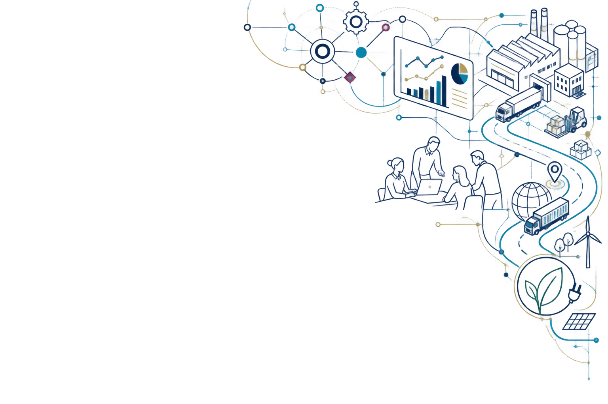
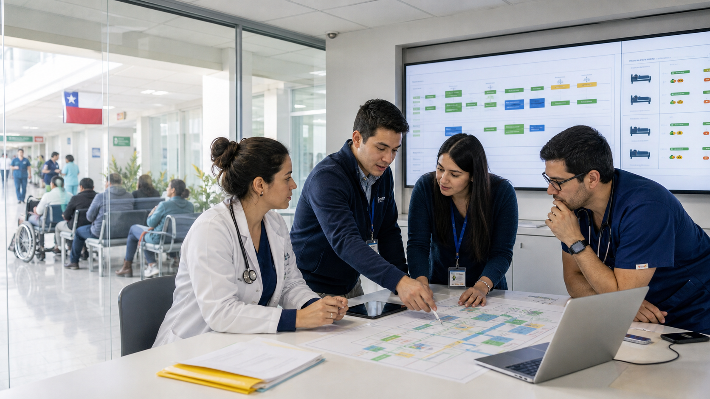

Escuchar, medir y encontrar la causa detrás del síntoma.

Ingeniería Civil Industrial USS
Diseñar sistemas que funcionan
Datos, matemáticas y criterio humano para mejorar decisiones reales.
Una experiencia para 4º medio: descubre qué hace un ingeniero civil industrial y por qué su mirada transforma organizaciones, servicios e industrias.
Tu punto de partida
Elige tu misión: ¿qué sistema salvarías primero?
Una fila, un atraso o un desperdicio son señales de algo más grande. Elige tres desafíos y descubre qué dimensión de Civil Industrial despierta primero tu curiosidad.
0 de 3 seleccionadas
Elige tu primer desafío.
Ingeniería en las noticias
Los sistemas reales ya están cambiando
Dos noticias sirven como gancho: muestran que la ingeniería industrial conversa con IA, minería, energía, productividad, logística y sostenibilidad.
InvestChile · 6 marzo 2026
IA en faenas: productividad, seguridad, automatización y datos
Pregunta para abrir conversación: ¿qué decisión no dejarías 100% en manos de una IA?
Abrir noticia Ministerio de Minería · 19 mayo 2026 Más tecnología exige más cobre, energía y mejores operacionesPregunta para conectar con Industrial: ¿cómo producir más sin destruir más?
Abrir noticiaEl quehacer industrial
Así trabaja un ingeniero civil industrial
No es solo una planilla: recorre procesos, conversa con equipos, construye modelos y convierte una decisión en una mejora que funciona.
Traducir la realidad en variables, escenarios y restricciones.
Comparar alternativas con tiempo, presupuesto y riesgo.
Coordinar personas, probar, medir y volver a mejorar.


Conceptos fuerza de la carrera
Tecnología, gestión y liderazgo para mejorar sistemas reales
El sello USS se vive en proyectos concretos, contacto con organizaciones y herramientas que hoy están transformando las operaciones.
Proyectos reales desde primer año, desafíos concretos y metodologías ágiles.
Una red de más de 400 organizaciones acerca experiencias y problemas profesionales.
Data science, IoT, automatización y simulación aplicadas a decisiones reales.
Camino formativo
Diez semestres para pasar de entender problemas a liderar soluciones
La carrera conecta base científica, herramientas digitales, gestión y proyectos con organizaciones.
Matemáticas, física, programación, estadística y economía.
Optimización, simulación, analítica, operaciones y proyectos.
Logística, calidad, electivos y proyecto de titulación.
4 sedesSantiago, Concepción, Valdivia y Puerto Montt
3 rutasOperaciones y logística, finanzas o data science
1 títuloIngeniero/a Civil Industrial
La malla y la oferta por sede pueden actualizarse. La referencia final siempre es Admisión USS.
Campos de acción
Civil Industrial cabe donde haya decisiones complejas
No es una carrera limitada a fábricas. Su forma de pensar permite comprender sistemas, decidir con evidencia y ejecutar con impacto en sectores muy distintos.

Salud y servicios
Flujos de pacientes, capacidad, turnos, experiencia y calidad de atención.
Datos, IA e innovación
Modelos, tableros, automatización responsable y nuevos negocios.
Sostenibilidad y gestión
Proyectos, evaluación económica, eficiencia energética e impacto.
La matemática en acción
Las fórmulas importan cuando ayudan a decidir mejor
No necesitas entrar sabiéndolo todo. Aprenderás matemáticas para leer incertidumbre, optimizar recursos y defender decisiones con evidencia. La pregunta es: “¿qué decisión puedo mejorar con esto?”.
Probar escenarios antes de cambiar la realidad.
Elegir rutas, turnos o producción bajo restricciones.
Separar patrones reales de ruido y azar.
Comparar costos, beneficios, riesgos e impacto.
La pregunta incómoda
¿Entonces ahora decide la IA?
Puede reconocer imágenes, anticipar fallas y recomendar acciones. Pero reconocer un patrón no significa comprender el sistema completo ni hacerse cargo de sus consecuencias.
La IA compara casos y detecta patrones que se repiten.
Estima una categoría, un riesgo o un resultado probable.
El ingeniero formula la pregunta, el objetivo y las restricciones.
Revisamos errores, decidimos y asumimos las consecuencias.
IA en acción
¿La IA entiende tu dibujo?
Quick, Draw! intenta reconocer lo que dibujas en 20 segundos. Observemos cuándo acierta, cuándo se confunde y qué aprendemos de sus errores.
Quick, Draw!
Dibuja un objeto, escucha las predicciones y compara el resultado con tu intención.
20 spor dibujo
6desafíos
La bajada a Civil Industrial
En el juego
Dibujos anteriores.
En la carrera
Datos históricos de procesos.
En el juego
Reconoce una categoría.
En la carrera
Anticipa fallas, demanda o atrasos.
Si se equivoca
Volvemos a dibujar.
En una operación
El error puede afectar personas y recursos.
La IA encuentra un patrón.El ingeniero decide qué significa y qué hacer con él.
Para estudiantes de 4º medio
Podría ser para ti si te gusta descubrir por qué algo no funciona
No existe un único perfil. Puedes llegar por las operaciones, los datos, la tecnología, la sostenibilidad o las ganas de convertir una idea en una mejora real.
Si te preguntas... ¿Cómo se organiza mejor esto?
Si te interesa... Decidir con evidencia
Si quieres... Impactar desde lo real

Reto exprés interactivo
Planta en crisis
Una empresa entrega kits tecnológicos a colegios. Hay atrasos, fallas de calidad y alto consumo de energía. Elige tres intervenciones sin superar el presupuesto.
01:30tiempo
100presupuesto
0 / 3decisiones
Entrega14 días
Calidad62 / 100
Costo unitario100 / 100
Selecciona tres intervenciones sin superar los 100 créditos.
Impacto práctico
Un industrial transforma problemas en decisiones implementables
La diferencia está en hacerse cargo de la solución completa: números, personas, tecnología, recursos, ética y consecuencias.
Menos espera y mejor experiencia en salud, educación o transporte.
Procesos más seguros, eficientes, trazables y sostenibles.
Ideas que pasan de prototipo a operación real.
Modelos útiles, auditables y conectados a decisiones humanas.
Tu próxima decisión
Mirar el sistema completo cambia la solución
No tienes que saberlo todo hoy. Basta con reconocer qué problemas te dan ganas de entender y mejorar.